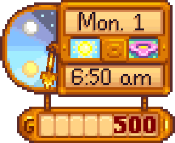

Day Cycle
| Getting Started |
The Player |
Options | Controls | Mobile Controls |
Health | Energy | Skills | Day Cycle |

- See also: Days of the Week
The Day Cycle is a period of 20 hours in-game from 6am to 2am in which the Player (farmer) is able to work and perform other activities around the Valley. The player will always wake up at the same time every day, but they are able to choose to go to bed whenever they like, which in turn ends the day.
Effects
The main effects of the day cycle on the player character are the processes of sleeping and saving that happen overnight. The player may choose to go to bed at any hour to sleep and progress time to the morning of the next day. This is done by moving into the area inside of any bed, and a dialogue will prompt them to confirm the decision. However as a reminder, as time passes midnight (12:00 am) the player's character will show that they are tired and in need of sleep.
Sleep will restore the player's Energy and Health to full if they go to bed no later than midnight and are not exhausted, and to half if they pass out or are exhausted. The longer past midnight the player stays awake, the less energy they wake up with, with about 75% restored if they sleep at 1am, and 50% if they sleep right before 2am. Regardless of when the player sleeps, there will be no further impact on the next day – the player will wake up and become active at 6am as usual, even if they stay up late. Therefore even though the day will go on until 2am, there is no requirement to stay awake for the whole day; conversely there is also no immediate need to sleep as soon as the clock turns to midnight.
The game saves only after the player has gone to sleep and the daily profit breakdown has been accepted, signaling the start of a new day.
In multiplayer, it is possible to "nap" during the daytime when positioned inside a bed. The normal sleep confirmation dialogue will appear for that player, and all players will see an automatic message announcing the player's intent to sleep. The player will slowly regain energy and health as time passes, at 2 points per second,[1], like at the Spa. When in bed, a dialogue will indicate how many other players are also waiting to end the day. There will be no additional messages if they choose to get up out of bed and later return to bed. Finally, note that in multiplayer, all players must be sleeping simultaneously (or pass out) to progress to the overnight profit breakdown, and all players must click "ok" to close the profit breakdown screen in order to save and start the next day.
Passing out
The player can stay awake until 2am, after which their character will pass out. This means the player is unable to be active after 2am, even if they have energy remaining. If the character passes out outside their Farmhouse or Cabin, they will wake up in bed, having been dragged there by either a JojaMart medical team, Linus, Marlon, or Dr. Harvey if they are not married to him. In each case except Marlon's, 10% of the player's gold, up to a maximum of  1,000g (or
1,000g (or  2,500g on Ginger Island, including the Volcano Dungeon), will be lost. The details of this transaction will appear as a letter in the player's mailbox the next day, although Linus does not count the gold lost (the amount is still stored in the save file). There is no penalty for falling asleep while inside a Farmhouse or Cabin. In a multiplayer game, any player that passes out will be announced in chat, even if they are inside the farmhouse.
2,500g on Ginger Island, including the Volcano Dungeon), will be lost. The details of this transaction will appear as a letter in the player's mailbox the next day, although Linus does not count the gold lost (the amount is still stored in the save file). There is no penalty for falling asleep while inside a Farmhouse or Cabin. In a multiplayer game, any player that passes out will be announced in chat, even if they are inside the farmhouse.
Darkness
Depending on the season, nightfall is at different times. In Spring and Summer, it is 8pm, while in Fall it is at 7pm and Winter is 6pm. At nightfall, the background noise may change, and indoors the windows turn dark and lamps and sconces light up. Indoor locations also become dark at night (unless fully lit by light sources), but if nightfall happens while you are indoors it stays light until you exit and re-enter. At night outdoors, it does not immediately become full dark, but gradually becomes darker over time.
Villagers and locations
Villagers will move to different locations around the Valley depending on the time, combined with some additional influence from days of the week. The time of day also affects what locations are open, including shops according to their Shop Schedules. For example, most locations in Pelican Town generally open at 9am.
Fishing
Certain fish only appear at certain times of the day. For example, it is considered nighttime after 6pm, which makes it possible to catch some nighttime fish. However as an aside, it does not become dark until around 8pm, depending on the season. Other specific fish might only be active at certain hours during the daytime, such as a period during the morning or afternoon.
Animals
Animals will leave their coop or barn at the start of the day if it is possible to do so (the weather is sunny and the building's animal door is left open). This allows them to eat grass. In the evening they will return to the building to sleep.
These animals will attempt to return to their coop or barn at 5pm on their own, will start going to sleep at 7pm, and will stop moving around the building by themselves at 8pm. After that time they will settle down and stay in one place. They normally cannot be interacted with while they are asleep, making it impossible to raise their heart level. The heart level of cows and goats, however, is increased through successful milking, which can be done any time, including while they are sleeping. The advantage of milking after 8pm is that animals will never walk away and be out of range.
Sometimes animals will refuse to go inside, moving around like they would during the day even at midnight. This can be fixed by leaving and re-entering the farm, and the animals will be automatically moved inside. Exiting the barn and re-entering is another option; the animals will change position randomly.
Night
For purposes of processing times of items like Kegs, Furnaces, Oil Makers, etc. a full day of 20 hours counts as 1200 minutes, but time passes differently from 2am to 6am, with each hour counting as 100 minutes. This means that processing activities that normally take longer than 240 minutes (4 hours), but less than 400 minutes, like making oil (360 minutes) or smelting gold (300 minutes), will still be completed by 6am if started at 1:50am. This also means that each full 24 hour time period counts as 1600 minutes instead of 1440 minutes.
Passage of time
Time passes at 0.7 real seconds per in-game minute (except the Skull Cavern where it's 0.9).
In single-player mode, time will pause (and the clock will blink in grayed-out text) when viewing a cutscene, viewing a dialog or menu (like the game menu, billboard, or quest journal), and during some animations (like reeling in a fish or jumping on/off a horse). In multiplayer mode, the game doesn't pause automatically.
Ignoring pauses, in-game time maps to real time like so:
| Game time | Real time | Real time in Skull Cavern |
|---|---|---|
| 10 minutes | 7 seconds | 9 seconds |
| 1 hour | 42 seconds | 54 seconds |
| Full day 6am to 2am, 20 hours |
14 minutes | 18 minutes |
| Week (full days) | 1 hour, 38 minutes | 2 hours, 6 minutes |
| Season (full days) | 6 hours, 32 minutes | 8 hours, 24 minutes |
| Year (full days) | 26 hours, 8 minutes | 33 hours, 36 minutes |
References
- ↑ See Farmer::Update in the game code.